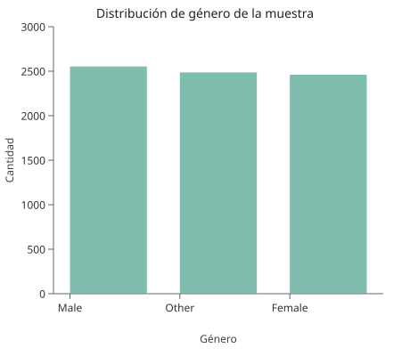
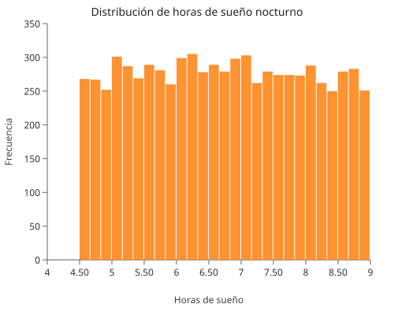
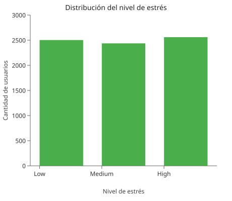
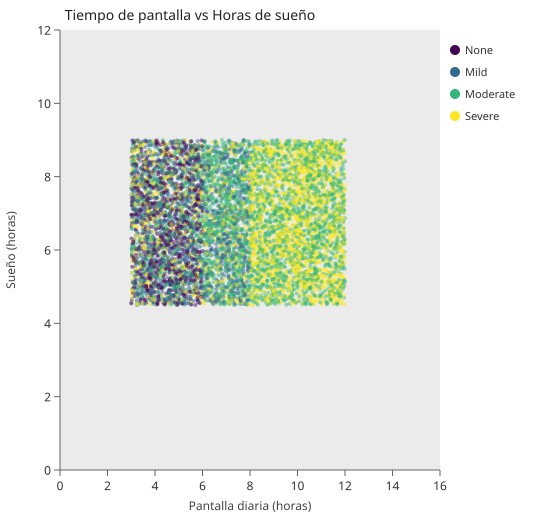
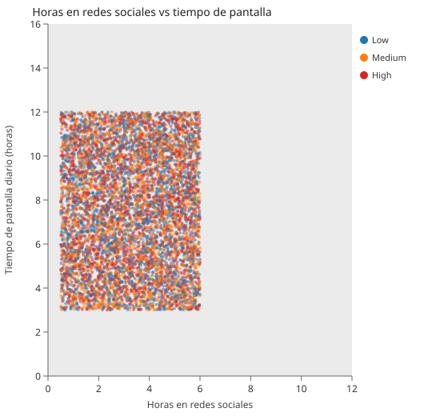
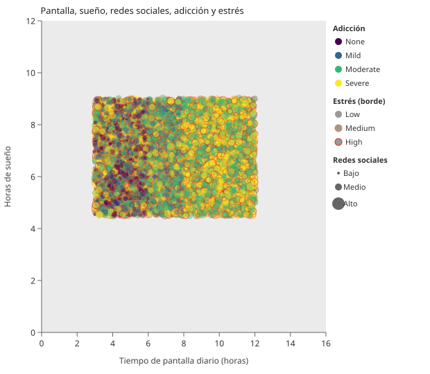

Introducción
Hoy en día el smartphone forma parte de casi todo lo que hacemos como comunicarnos, estudiar, entretenernos, trabajar y hasta descansar. Por eso, aunque el celular nos facilita muchas tareas, también puede convertirse en un problema cuando su uso deja de ser equilibrado. En este proyecto se analiza un conjunto de datos relacionado con hábitos de uso del smartphone, con el fin de observar cómo se comportan variables como el tiempo de pantalla, las notificaciones, el sueño y el nivel de adicción.
En este segundo proyecto se replica el análisis exploratorio utilizando InjaX, una herramienta de generación de gráficas SVG mediante plantillas. Cada gráfica fue generada como archivo SVG individual a partir de plantillas .inja y datos en formato .json.
Más que solo mostrar gráficas, la idea es entender qué nos dicen los datos sobre la relación que existe entre el uso del teléfono y ciertos aspectos de la vida diaria. Esto es importante porque el uso excesivo del smartphone ya no se ve solo como una costumbre moderna, sino como algo que puede afectar la concentración, el descanso, el estrés y el rendimiento académico.
Descripción del problema
El problema principal que se aborda en este análisis es la posible adicción al smartphone y sus consecuencias en el comportamiento de los usuarios. Aunque muchas personas usan el teléfono por necesidad o por entretenimiento, en algunos casos el tiempo de pantalla aumenta tanto que termina interfiriendo con otras actividades importantes.
Este tipo de uso excesivo puede reflejarse en señales como revisar constantemente el celular, recibir muchas notificaciones, abrir aplicaciones demasiadas veces al día o dormir menos por pasar mucho tiempo conectado. Además, cuando el uso del smartphone se vuelve muy intenso, también puede asociarse con niveles más altos de estrés o con un impacto negativo en el estudio y en la rutina personal.
Por eso, el análisis no se centra solo en cuánto se usa el celular, sino en entender qué patrones acompañan ese uso. La intención es identificar si existen diferencias entre grupos de usuarios y si ciertos hábitos digitales pueden relacionarse con un mayor nivel de adicción.
Definición de fuentes de datos
Para este proyecto se utiliza un conjunto de datos tomado de Kaggle llamado Smartphone Usage and Addiction Analysis (7500 Rows). El archivo contiene 7,500 registros y varias variables que describen características demográficas, hábitos de uso del smartphone y algunos efectos asociados a ese uso.
Entre las variables disponibles hay datos como edad, género, horas de pantalla diarias, horas de sueño, uso de redes sociales, tiempo dedicado a videojuegos, tiempo de trabajo o estudio, cantidad de notificaciones, número de aperturas de aplicaciones, nivel de estrés, uso en fin de semana, impacto académico y nivel de adicción.
Este tipo de datos resulta útil porque permite analizar el problema desde distintos ángulos. No se trata únicamente de ver cuánto tiempo pasa una persona en el teléfono, sino de relacionar ese comportamiento con su rutina, su descanso y su nivel de afectación.
Gráficas principales
Distribución de género
La distribución de género se mantiene relativamente equilibrada lo cual es positivo para el análisis ya que reduce el sesgo en la interpretación de los resultados. Esto permite comparar comportamientos entre grupos sin que uno domine significativamente la muestra. Por lo tanto, cualquier diferencia observada posteriormente entre géneros puede considerarse más representativa y confiable.

Distribución de horas de sueño
La mayoría de los usuarios duerme alrededor de 7 horas lo cual se alinea con recomendaciones generales de descanso. Sin embargo, la existencia de un grupo considerable que duerme menos de 5 horas resulta preocupante ya que podría estar relacionado con el uso excesivo del smartphone, especialmente durante la noche. Esto sugiere una posible afectación en la calidad de vida y en el bienestar general.

Nivel de estrés
La distribución del nivel de estrés es relativamente equilibrada entre las categorías lo que indica que el estrés está presente en distintos niveles dentro de la población analizada. Esto permite explorar cómo el estrés se relaciona con otras variables como el uso del smartphone o el sueño sin que una categoría domine completamente el análisis.

Relación entre tiempo de pantalla y horas de sueño
La relación entre el tiempo de pantalla y las horas de sueño muestra una tendencia negativa, es decir, a mayor uso del smartphone, menor cantidad de horas de descanso. Además, al incorporar el nivel de adicción se observa que los usuarios con niveles más altos tienden a concentrarse en zonas de alto uso y bajo sueño. Esto sugiere que la adicción al smartphone no solo implica más tiempo de uso, sino también un impacto directo en hábitos saludables como el descanso.

Horas en redes sociales según nivel de estrés
El grupo con nivel de estrés medio presenta una mayor mediana en el uso de redes sociales lo que podría indicar que estas plataformas funcionan tanto como una fuente de distracción como un posible factor de estrés. La variabilidad observada sugiere que el uso de redes sociales no es uniforme, pero sí puede estar vinculado a cambios en el estado emocional de los usuarios.

Pantalla, sueño, redes sociales, adicción y estrés
Esta gráfica incorpora cinco variables simultáneamente: el eje X representa el tiempo de pantalla diario, el eje Y las horas de sueño, el tamaño del círculo indica las horas dedicadas a redes sociales, el color del relleno muestra el nivel de adicción y el color del borde refleja el nivel de estrés. Se observa que los usuarios con mayor nivel de adicción tienden a concentrarse en zonas de alto uso de pantalla y bajo sueño, con mayor uso de redes sociales, lo que refuerza la idea de un consumo digital elevado en múltiples dimensiones.

Conclusiones
A partir del análisis exploratorio realizado se identificaron patrones relevantes en el uso del smartphone y su relación con variables como el estrés, el sueño y la edad. En general, se observa que el uso intensivo del dispositivo está asociado con efectos negativos en la rutina diaria, especialmente en la reducción de horas de sueño y en el aumento de los niveles de estrés.
Uno de los hallazgos más importantes es la relación entre el tiempo de pantalla y el nivel de adicción donde los usuarios con mayor uso tienden a presentar comportamientos más cercanos a la dependencia. Además, estos usuarios suelen concentrarse en valores altos de uso tanto en redes sociales como en videojuegos lo que refuerza la idea de un consumo digital elevado en múltiples dimensiones.
También se identificó que los niveles de estrés están relacionados con menores horas de descanso lo que sugiere un posible impacto en la salud y el bienestar. Este efecto se observa de manera consistente en distintos grupos lo que indica que no depende únicamente de factores demográficos como el género.
Por otro lado, la edad parece jugar un papel importante ya que los usuarios más jóvenes presentan mayores niveles de adicción en comparación con los adultos, lo que podría estar relacionado con una mayor exposición o dependencia de la tecnología.
En conjunto, los resultados sugieren que el uso excesivo del smartphone no es un fenómeno aislado, sino que está vinculado a múltiples aspectos del comportamiento diario. Esto resalta la importancia de promover un uso más equilibrado de la tecnología, especialmente en poblaciones jóvenes, para reducir posibles efectos negativos en la salud y el rendimiento.
Referencias a Gists
Cada gráfica fue publicada como un gist individual en GitHub, incluyendo la plantilla .inja, el archivo de datos .json, la imagen generada y un readme.md descriptivo.